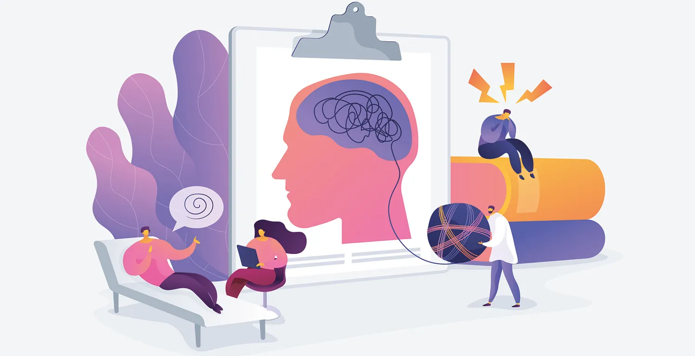

Regarder moins les réseaux
Comparer ton corps à des images retouchées peut diminuer la confiance. Fais attention à ce qui te fait du bien.
🧠 Psychologie
Une page sur l'image de soi, les sautes d'humeur, les relations et ce qui peut aider à mieux se connaître.

Les hormones influencent ton humeur. Il est normal de ressentir plus d’émotions qu’avant, et parfois de ne pas comprendre pourquoi.
Ton regard sur ton corps et ta personnalité évolue souvent à l’adolescence. C’est une étape pour apprendre à t’accepter.
Comparer ton corps à des images retouchées peut diminuer la confiance. Fais attention à ce qui te fait du bien.
Dire à voix haute tes doutes et tes joies aide à mieux les comprendre.
Tout ne doit pas bouger en même temps. Certaines questions se clarifient avec le temps.
La manière dont tu vis tes relations peut changer. Certaines amitiés deviennent plus intenses, d'autres moins importantes.
Le stress peut augmenter pendant la puberté, surtout à cause de l'école, du sport et des relations.